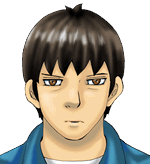
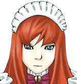
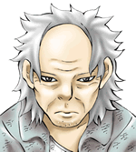
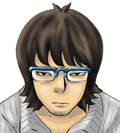
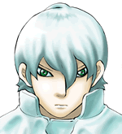
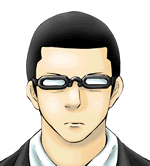
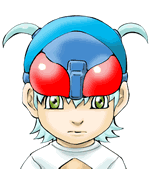

5 |
登場人物紹介 |
 |
| 菅田健太郎 | ||
 |
プロ棋士の夢破れ、それでも将棋を捨てきれずに賭け将棋を続けてきた青年。中静そよと出会った事で真剣師“ハチワンダイバー”としての道を歩みだす。
得意戦法：四間飛車 |
|
| 中静そよ | ||
|  | 「アキバの受け師」と呼ばれる凄腕の真剣師。その一方で“派遣メイド・みるく”としての顔も持つ、謎の多い女性。
得意戦法：居飛車全般 |
|
| 二こ神 | ||
|  | 過去、プロ棋士に勝利した実績を持つ伝説の雁木使い。名前に二つ「神」が付くことから「二こ神」と呼ばれる。
得意戦法：雁木 |
|
| 文字山ジロー | ||
|  | 人気漫画「なるぞうくん」を連載する漫画家真剣師。駒と話しながら指す不気味なスタイルだが、実力は本物。
得意戦法：穴熊 |
|
| 斬野シト | ||
|  | 常に沈着冷静な真剣師。生きているような人形を作り出す人形師でもある。
得意戦法：新早石田流三間飛車（三間飛車全般） |
|
| 澄野久摩 | ||
 |
強引に相手をねじ伏せる腕力将棋を得意とする真剣師。斬野シトの将棋の師匠。
得意戦法：原始中飛車（中飛車全般） |
|
| 海豚マス夫 | ||
|  | 若干14歳でプロとなった、現在七段のプロ棋士。20年前とあるアマチュアに敗北して以来、その事が心残りになっている。
得意戦法：矢倉 |
|
| 斬野クル | ||

|
斬野シトの妹。将棋をはじめて３ヶ月ほどの初心者。まだ誰にも勝った事がない。
得意戦法：無敵囲い＆カニカニ銀 |
|
 |
 |
 |